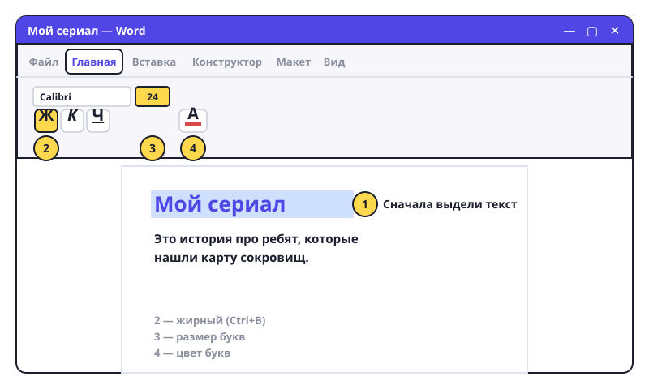

Жирный, курсив, размер и цвет
Текст можно оформлять: делать заголовки большими, важное — жирным. Главное правило: сначала выдели, потом меняй.

Как выделить текст
- Мышью: нажми левую кнопку в начале слова, держи и тяни до конца. Текст подсветится серым или синим.
- Одно слово: двойной клик по нему.
- Весь абзац: тройной клик.
- Весь текст: Ctrl+A.
Оформление
- Вверху Word — лента с кнопками. Нам нужна вкладка «Главная», группа «Шрифт».
- Жирный: выдели и нажми кнопку Ж или Ctrl+B.
- Курсив (наклонный): кнопка К или Ctrl+I.
- Подчёркнутый: кнопка Ч или Ctrl+U.
- Размер: окошко с цифрой (обычно 11 или 12). Выдели текст и выбери 16, 20, 28. Для заголовка — 20–28, для обычного текста — 12–14.
- Цвет: кнопка А с цветной полоской. Стрелочка рядом — выбрать цвет.
- Шрифт (как выглядят буквы): окошко с названием, например Calibri или Times New Roman. Попробуй разные — но в докладе для школы лучше один спокойный шрифт.
Попробуй сам: открой «Мой сериал». Первую строку сделай заголовком: размер 24, жирный, синий. Название сериала в тексте сделай курсивом.
Ничего не меняется? Скорее всего, ты забыл сначала выделить текст. Кнопки работают только с выделенным.